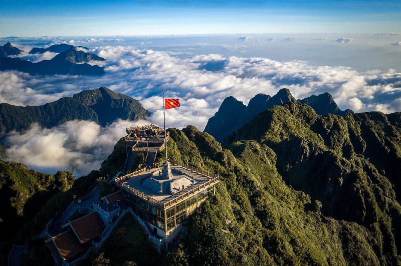

Thông Tin Tour
Giá: 3,800,000 VND
Ngày đi: 05/01/2025
Phương tiện: Máy bay lượt đi + khứ hồi hoặc xe limousine cao cấp.
Thời gian: 2 ngày 1 đêm
Giới thiệu: Tour khám phá thiên nhiên, ẩm thực và nét đẹp văn hóa Sapa.
Lịch Trình Tour
- Ngày 1: Di chuyển đến Sapa, tham quan bản Cát Cát.
- Ngày 2: Khám phá đỉnh Fansipan và núi Hàm Rồng.
Điểm Tham Quan Nổi Bật
- Núi Hàm Rồng: Với vườn lan và cảnh núi non hùng vĩ.
- Bản Cát Cát: Với nét văn hóa của người H’Mông.
-  Đỉnh Fansipan: Nóc nhà Đông Dương.
Ẩm Thực Đặc Sắc
Tour sẽ giới thiệu đến du khách các món ăn nổi tiếng của Sapa:
- Cá hồi Sapa: Thớ thịt săn chắc, béo ngọt nhưng ít mỡ có thể chế biến nhiều món ăn khác nhau.
- Thắng cố: Món ăn truyền thống của đồng bào dân tộc Mông, bắt nguồn từ phương Bắc.
- Lẩu cá tầm: Được biết đến là đặc sản vùng đất Sapa, rất ngon và giàu dinh dưỡng.
Phương Tiện Di Chuyển
Du khách có thể lựa chọn:
- Máy bay lượt đi + khứ hồi đầy đủ tiện nghi.
- Xe limousine sang trọng, thoải mái.